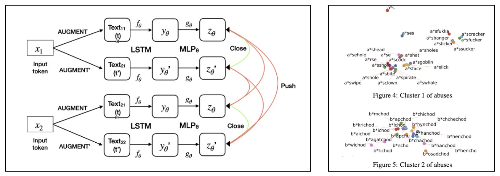

|
Hi, I am a second-year Master's student in Computer Science and Engineering department at UC San Diego.
For the summer of 2024, I was interning with the Video Engineering Team at Apple, under Dr. Javier Movellan.
My work was focused on enhancing data mixtures for pre training of grounded multi-modal large language models (VLMs) & exploring
the multi-modal token space of such VLMs.
Currently I am open to full time roles in computer vision, multi-modal & LLM research roles for March 2025. |
{kind=link}
|
How to make machines percieve the world ?
|
|
Vedant S. Joshi, Prof. Manmohan Chandrekar | Project, 2024 3D Gaussian Splatting (3DGS) represents the state-of-the-art in 3D scene reconstruction, functioning by projecting 3D Gaussians onto 2D camera planes and rasterizing images. Recently, 3DGS has been adapted to various tasks beyond simple 3D scene reconstruction, tasks that were previously explored using Neural Radiance Fields (NeRFs). These tasks include 3D object segmentation, scene relighting, and modeling in-the-wild scenes, often requiring the addition of feature vectors to points in 3D space, as represented implicitly by NeRFs. Recent work has focused on attaching extra feature vectors to these Gaussians as optimization parameters to hold additional information. However, the optimization of these features occurs in the 2D image space after rasterization. While this approach allows faithful updating and optimization of features, we believe it lacks 3D awareness. Our goal is to improve the quality of feature vectors learnt in each gaussian by making them aware of their local & global neighbourhood. We propose contextualization of vectors via self-attention in the explicit 3D representation via local & global transformers. Our initial experiments highlight several implementation challenges associated with introducing the computationally expensive O(n2) self-attention mechanism. We provide solutions to address these challenges and demonstrate the effectiveness of our approach. |
|
Vedant S. Joshi, Dr. Sivanagaraja Tatinati, Dr. Yubo Wang | PrePrint arXiv, 2022 In this new age of online learning students are still getting accustomed to virtual sessions. Watching recorded videos in the name of attending classes seems to be the trend followed by many EdTech players but at Vedantu, we understand the problems associated with such passive setups. Therefore we provide live classes where students can directly chat with their teachers as well as peers & enjoy the simulated experience of offline classes in an online world. The chatting framework is crucial to our platform for achieving an improved flow of information between the players involved. Sometimes certain miscreants in the class, use our chats framework to post certain insults or abusive language to disturb the decorum of the session. Posting ill intent messages that are directed towards another student, teacher, racial group or gender can foster the feeling of negativity in the mind of the receiver. Even though such situations occur rarely, they must be addressed instantaneously due to the magnitude of their impact on a student’s mind. Since students don't strictly adhere to syntax or grammatical rules in a chat environment, our solution needs to be invaraint to noisy substitues to a given word. Also there are scenarios where some creative players come-up with clever work arounds such as self-censoring (f**k) or random character deletions (fck) to fool our detection system & still maintain the negative intent of the chat being posted on our platform. YZR-Net is our NLP implementation of the image SSL framework SimCLR. It is trained on a multi-pair, instance discrimination objective for words & since we are using a dictionary of unique words we are 100% sure that the negative pairs being generated, are semantically separate in nature. For our NLP usecase the whole framework seemed ideal because we had an added challenge of profanity detection in the unstructured, transliterated language Hinglish. Due to lack of research or pre-trained models in Hinglish, we had to formulate our learning objective on word syntax instead of learning the loosely defined semantics of the language. Our final goal was to learn a structured latent space where representations of profane words & their augmented counterparts are present in close proximity ( metric : cosine similarity ). Our system improved the baseline regex recall by 10% & the precision was maintained by using a false positive (similar in syntax but different in semantics) dictionary of non profane words which are removed in the pre-processing pipeline. The key achievement of our model is that now we have a compact dictionary of key profane tokens only & this dictionary can be updated without retraining the YZR-Net incase a new profane token is coined by our creative students ! The implementation is useful only when there is a profane token used in the chat & therefore as a part of version 2, we are working on Heirarchial Atttention Networks to capture cases where a complex combination of non profane tokens sends an ill intent message. |
|
Vedant S. Joshi, Dr. Sivanagaraja Tatinati, Dr. Yubo Wang | PrePrint arXiv, 2022 Doubts are a natural outcome of any student's learning journey & solving them immediately becomes imperative for any EdTech platform so that the steady growth of learning for every child can be maintained. In this era of Big Data the volume of data being generated on Vedantu is huge & this is also applicable for the doubts being asked on our platform. The traditional way of solving doubts by Subject Matter Experts(SME) is time consuming, redundant & infeasible in nature. Assigning one SME per doubt for every student is unimaginable. Therefore coming up with a system that can find a possible solved match for an asked doubt & create clusters of semantically similar doubts so that the redundancy in answering the same question by SMEs is reduced, would help our platform immensely. 
In this work we solved a sub-problem of diagram based matching for doubt questions. For the non-diagram questions we rely on the power of OCRs & transformers to build strong text matching engines but for pure reverse image search we come-up with a diagram extraction & matching module which allowed us to prevent re-answering of the same question & reduced the redundancy of diagram based doubts from 9.5 lakh individual points to 2.5 lakh clusters in our database. Our solution utilised the SOTA, self supervised framework BYOL in this project because there are a lot of similar diagram images in our training set & utilising the instance discrimination objective in SimCLR & MoCo for negative pairs had a high chance of pushing away the latent representations of 2 semantically relevant diagram images thereby affecting our top-5 matching scores. |
|
Our implementation is an improved version of the BYOL which is trained on diagram images extracted from a custom trained Scaled YOLOv4 module that gave a mean average precision of 90% for diagram detection. The main contribution of our work was to come up with a new, domain specific augmentation pipeline that modelled the possible noises generated by a student while uploading an image on our platform. The newly designed augmentations were guided by mutual information metrics to capture flashes, skews, random camera noise etc. but at the same time not loose semantic relevance of the matching pairs. The augmentations played a crucial role towards learning of noise invariant, compressed representations of diagrams & aided in achieving more accurate as well as relevant matches for a given input query. The diagrams on the right show the improved convergance of our models with stronger clustering abilities along the diagonals of image similarity matrices. In order to deploy the model, the vectors computed by our Custom BYOL were searched using approximate K-NN algorithms such as Heirarchial Navigable Small Worlds (HNSW) & the search space was reduced by performing clustering on the vectors using UMAP & HDBSCAN. Each cluster was represented by a centroid which was the key vector in the HNSW search space. |
|
Vedant S. Joshi, Dr. Ebin Deni Raj | 2021 8th International Conference on Smart Computing & Communications (ICSCC) The amazing ability of our human mind to handle multiple input sources at once & make sense of the environment in which we are present is truly extra-ordinary. Along with this ability, our mind is also dynamic enough to adapt to situations where we loose certain input sources & still make the best possible use of the information availale to us. We all think that speech understanding is a skill that is entirely dependent on hearing but vision also plays a key hidden role which helps us to disambiguate a lot of confusing scenarios. For people who have trouble in hearing, they rely a lot on their vision to understand speech. Based on this observation, I worked on my thesis titled For Your Eyes Only , to build an end to end deep learning system which is able to accurately map a set of lip movements in a given video to its corresponding character. |
|
The system is trained on a subset of words from the large scale Oxford-BBC Lip Reading in the Wild (LRW) Dataset. The whole problem statement is formulated around single word prediction, character by character because the aim of our thesis was to come up with a system that could learn lip movement to character mapping using only a limited set of words in training. This approach of character level prediction made our system more generalized in nature, incase we encountered a previously unseen word. The out of vocabulary words cannot be handled by simple classification models. We train the model on 112 words & the videos for each of them are processed according to the timestamp at which they are spoken. To further ease the task of learning in spatial domain, we make use of D-Lib facial features library to extract only the lip region from these videos with some buffer. Also speaking speed normalisation is applied so that every video would be 22 frames long in the temporal dimension & support efficient batching of training data into tensors.
For baseline performance we repurposed DeepMind's LipNet model from sentence level to word level predictor & train
it from scratch on the LRW subset. To learn complex frame interactions & improve model explainability, we added
Bahdanau attention mechanism in between the the 3D ConvNet encoder & GRU decoder which
is depicted by the heatmap on the left. The final prediction is made by using greedy CTC decoding techniques in order to get a single character that was
scaled to multiple frames during the alignment learning.
|
|
|
|
Vedant S. Joshi, Dr. Ebin Deni Raj, Jeena Thomas | Journal of Interconnection Networks, 2022 |
|
Owing to the landscape & natural conditions, coconut is an important fruit in Kerala. Coconut farms are an important aspect of the state's economy therefore a lot of citizen's livelihood is dependent on this fruit. Plucking coconuts from plam trees is a huge challenge since it involves scaling large heights & without proper equipment, it could lead to serious injuries for the daily wage workers. Inspired by this, I started to work on my Honours degree thesis project Coco-Layers. The whole project was divided into 2 modules :
Result shown below. |


|
|
|
In my free time I have the habit of contributing to the open source community by writing Kaggle notebooks from a mathematical point of view for the latest ongoing research in the field of self supervised learning. My notebooks are a step by step implementation of the latest frameworks on small scale datasets along with links to other research papers that might aid fellow researchers in their problem statements. Some of my implementations are as follows: